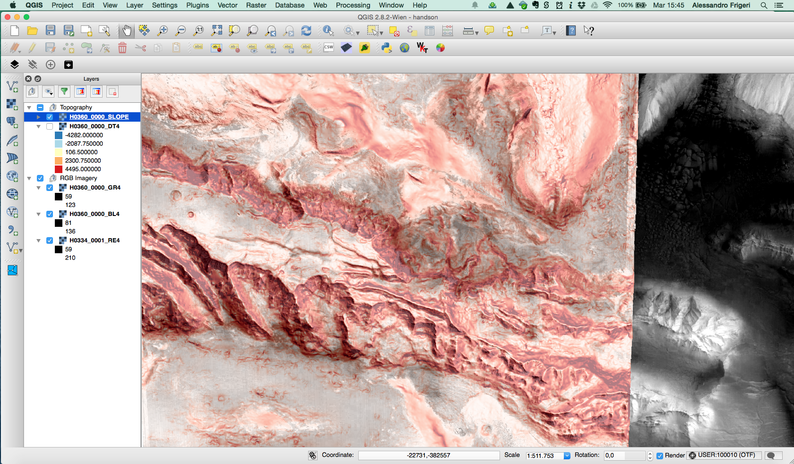
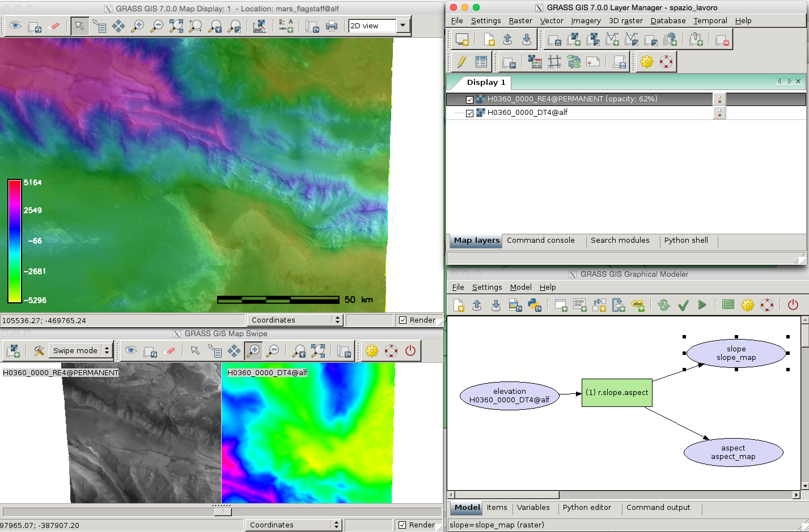

Planetary data with
GRASS GIS & QGIS
an hands-on tutorial
held at the 2nd Planetary Data Workshop, 9-11 June 2015, Flagstaff - AZ
Video about GRASS GIS from 1987, narrated by William Shatner
http://dx.doi.org/10.5446/12963
GRASS-ISIS3 integration 1/2
paper: A working environment for digital planetary data processing and mapping using ISIS and GRASS GIS

GRASS-ISIS3 integration 2/2

ISIS commands into GRASS7 GUI, by Yann Chemin
Goals of this tutorial
- Have the software installed - understand the licensing system
- Have the data imported into the software, and then:
- visualize data
- colorize a dtm
- process a dtm
Data
HRSC PDS3 raster Data from the ESAC GIS workshop 2015
Nomenclature vector data from USGS
Qgis

GRASS GIS (v7.0)
